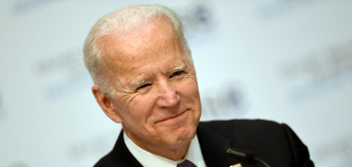

News?
Has Donald Trump done as much as he has said? Not at all. Reporters over the past four years have filled articles on Trump’s plan with healthcare, but they regret to inform citizens that he has truly done nothing healthcare wise. An example in which the Trump administration has failed to reveal the truth, or for lack of better words, lie, is written about in a recent story posted to The Washington Post. It is within this story that it is stated the Trump administration signed off on an executive order that “aims to enshrine the [ACA’s] most popular feature” whereas the truth is, the executive did the exact opposite. So why are Trump and his administration determined to lie about the ACA? Simply because Trump and the Republicans following him do not believe insurers should be restricted from their large, large amounts of money. However, they do realize that they cannot defend making things worse as they stand terrible already so they insist on lying as their coverage. To support the ACA’s broad outlines can be seen as one of the most conservative views on healthcare and under Trump’s lying administration, the system stands “incredibly cruel, expensive, and stupid”.
How was it that the Biden campaign knew about the Coronavirus vaccine before the chief health care administrator? Was it convenient to him that this information was founded so near the election? Was this all coincidental? The Trump administration doesn’t think so. It was said from the chief health care administrator, Alex Azar, that he did not know about the vaccine's effectiveness until he heard about it, stating “I, as Secretary of Health and Human Services, learned about this from media reports on Monday morning”. The company producing the vaccine also lied about its participation in Operation Warp, a federal initiative driven by the Trump administration, and later had to correct itself stating that they did indeed take federal money to aid them in making a vaccine. The Biden/Harris administration has been against the vaccine the Trump administration would be pushing out because they believed it was rushed, so what is the sudden change? Now, shortly after the release of the vaccine the Biden/Harris administration has refrained from further criticism.
Both articles, while discussing the issue of healthcare, take a very different approach to address the issue. In The Federalist's article the author, although still very biased, uses a more sophisticated tone to inform its reader about the current issue of lack of communication about the Coronavirus vaccine. Along with elaborate diction, The Federalist author backs the article up by introducing several remarks made by significant people. Thus, allowing the reader to feel confident about the provided information. The author sets the article up for the reader to develop their own opinion around the heavily influenced information. It is prominently shown, however, that this article is biased against the Biden administration as it points out its flaw in handling the most current issue - the Coronavirus vaccine.
The second article, written by Slate, takes a very passionate approach to the current issue of healthcare - specifically the issue of Obamacare. It is clear throughout the article that the author is in support of keeping Obamacare and has strong hatred toward the Trump administration. This author then goes on to ridicule the President and his administration for trying to rid Obamacare; the author states within the article several times that Trump and the republicans within the White House are nothing but liars. The author shows his knowledge of this topic but shows little factual evidence to back up his statements, leaving most of his work to be viewed as opinionated. Whether you agree or not, it would be incorrect to say that the author addresses both sides of the manner as well as attempts to provide evidence to back it. The article is driven by anger and passion, instead of being sophisticated and factual.
Like stated before, both articles, while discussing the issue of healthcare, take a very different approach to addressing the issue. It would be my conclusion to say that the Federalist article is the least bias (however still very bias) because of its strong use of quotation references.
In relation to the articles in part three, these two articles linked to above lack a strong evidence based background for the information they present. When referring to articles that sat in the green in yellow section, while bias was still there, it was hard to catch because factual information along with highly sophisticated diction was presented alongside it. In these articles in the orange section, there is little/minimal factual evidence and it can be easily noted how the author feels about the matter being written about. These two articles in the orange section, in comparison, do not match the level of reliability that the articles in part three might have. The articles start to turn more into an opinion rather than fact, which makes their source of information available to more susceptibility from their audience.